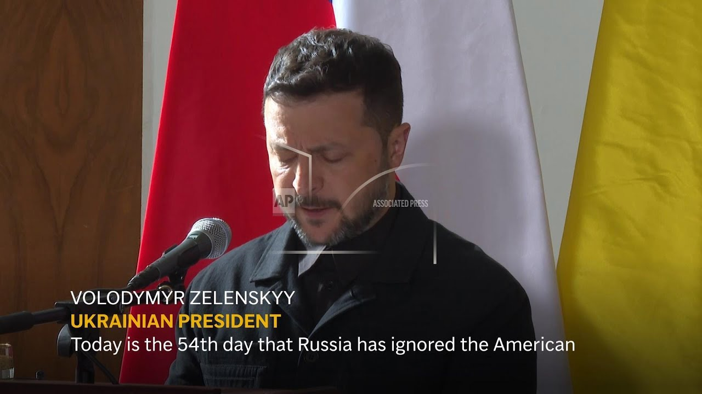

来B站一起耍【Global每日英语简报】
【泽连斯基在布拉格会见捷克总统时表示“随时可能停火”】
Summary: Today is the 54th day that Russia has ignored even America's proposal for a complete ceasefire.
摘要： 今天是俄罗斯无视美国提出的全面停火提议的第54天。

⏱️ Estimated Reading Time: 1 min
We believe that a ceasefire is possible at any moment, even from today, and should last at least 30 days to give diplomacy a real chance.
我们相信停火随时可能实现，甚至从今天开始，并应持续至少30天，为外交提供真正机会。
And I am grateful to the Czech Republic for supporting our position in this proposal.
我感谢捷克共和国在这一提议中支持我们的立场。
[ __ ] should know that we are counting on 3 million artillery shells.
[ __ ] 应该知道我们正指望获得300万发炮弹。
And it's not just North Korea that will help them.
帮助他们的不仅仅是朝鲜。
We have allies who are helping Ukraine.
我们有盟友正在帮助乌克兰。
This does not mean that anyone wants a long war.
这并不意味着有人希望战争长期持续。
We want to finish it.
我们希望结束战争。
And all wars end.
所有战争都会结束。
In any case, of which I am sure, the war will end, just as long dictatorial regimes always end, which end the life of any empire.
无论如何，我确信战争会结束，就像长期独裁政权总会终结一样，它们终结了任何帝国的生命。
Yeah.
是的。